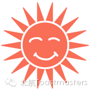
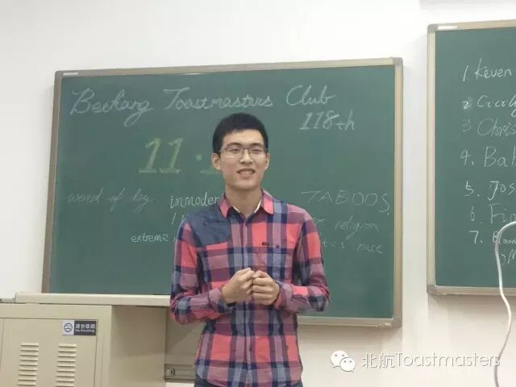
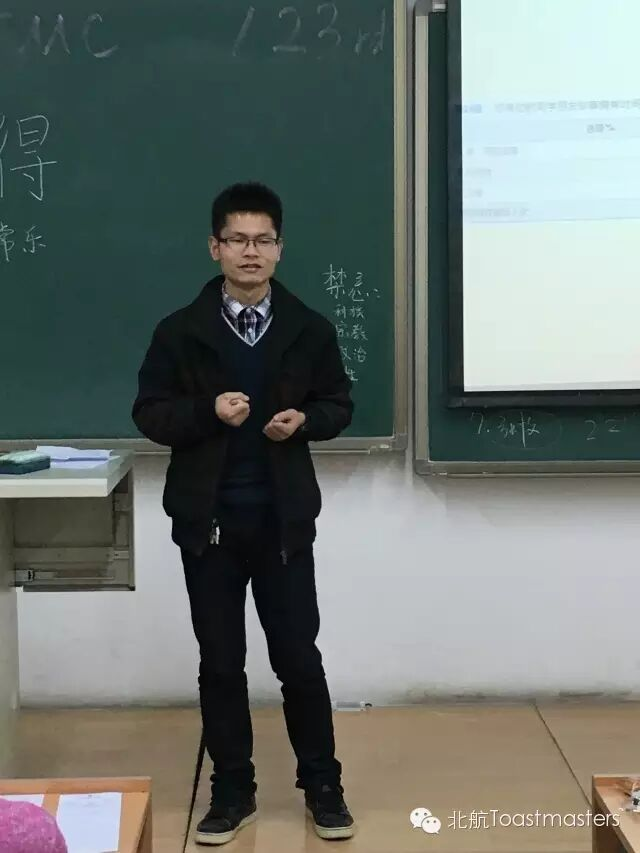
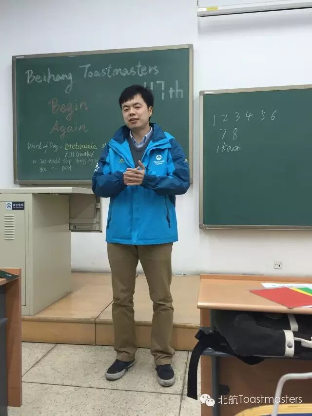
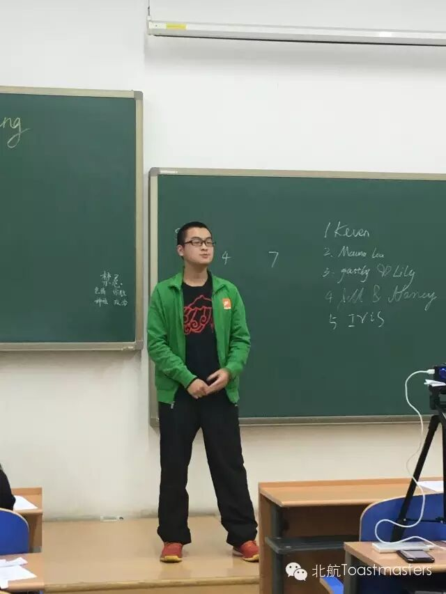
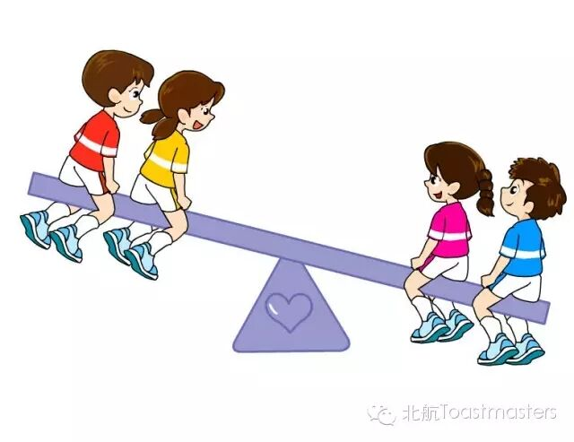
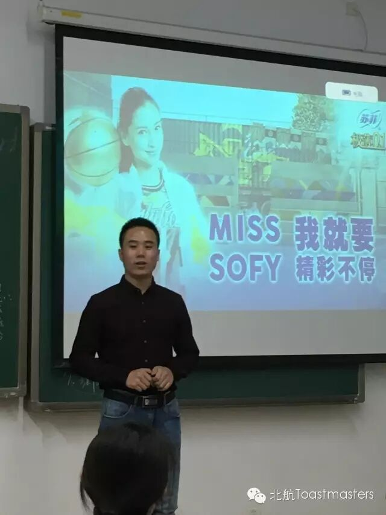

与您不见不散
<看此文者不点阅读原文就白看了>
点击“阅读原文”
原文链接（公众号关闭后可能失效）：
https://mp.weixin.qq.com/s/3py1rb6if02QE7_NFLHiyA
https://mp.weixin.qq.com/s/3py1rb6if02QE7_NFLHiyA
第 220/539 篇 · 北航Toastmasters英文演讲俱乐部公众号存档
本页为抢救式本地归档，图文已永久保存。
本页为抢救式本地归档，图文已永久保存。